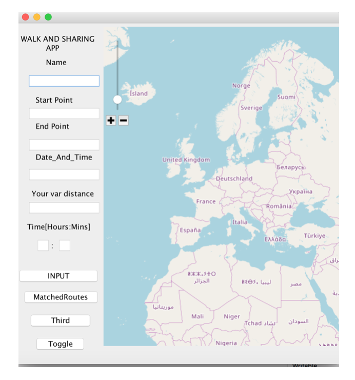
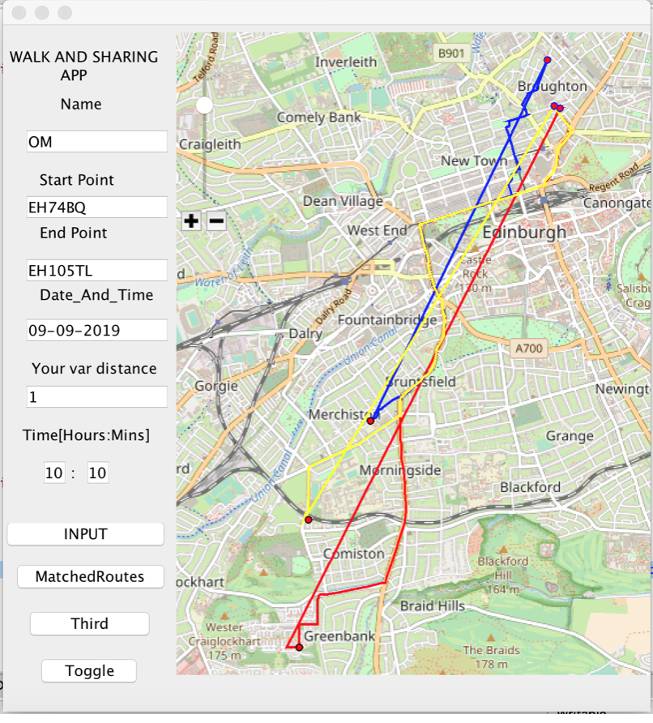
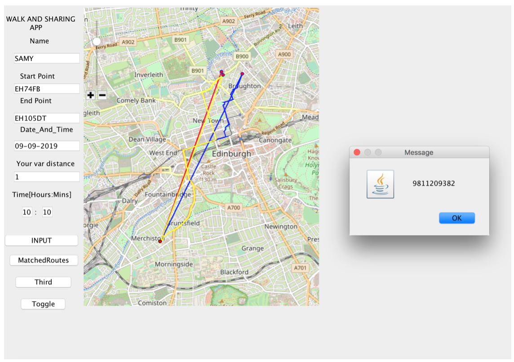

Edinburgh Napier University, Scotland, BEng (Hons) Computing 2017-2017
Modules taken- Honours Project, Society and Security, Distributed services and applications, Web design and Development, Advanced software engineering ,Team working techniques, Multi Agent Systems, Software Architecture.
University of Edinburgh, Scotland, UK Bachelor of Science Informatics 2012-2016
Related Modules undertaken: Functional Programming (Haskell), Object Oriented Programming (Java (Eclipse IDE),Computation and Logic, Data and Analysis, Introduction to Linear Algebra, Processing formal and natural languages, Reasoning and Agents, Economic Principles and Applications, Calculus and it applications, Probability with applications, Computer Systems (MIPS, C, MATLAB),Processing formal and natural languages (Python, Java, Prolog),Discrete Mathematics and mathematical reasoning, Introduction to Software Engineering, Algorithms, Data Structures, Learning, Introduction to Computer Systems, Agent Based Systems, Computer Science Large Practical, Computer Security, Database Systems, Elements of Programming Languages, Logic programming, Operating systems, Professional Issues, Software Engineering with Objects and Components, Software Testing, System Design Project. Most experience in languages: Java, Python and Haskell
SENIOR SECONDARY AND SECONDARY EDUCATION, Central Board of Secondary Education (CBSE)
Delhi Public School, Ghaziabad, India (2011-2012)
Informatics technology
Physics
Chemistry
Mathematics
English
High School CBSE Class 12 Pass, 86th percentile overall.
Maths-95, English-81, Physics-83, Chemistry-83, IT-89
Kothari International School, Noida, India (2009-2010)
Social studies (Geography, History, Political science)
Mathematics
French
Science(Biology,Chemistry and Physics)
English
High School CBSE class 10 pass (9.4/10) cgpa.
Maths-95, English-85, Science-85, French-89, Social Studies-95
Written by Sanyam Yadav
banmdsf,hjawd sfb,zc bv,jherfnsd mvb,c
Hi! My name is Sanyam Yadav.
I have graduated with a BSc in Computer Science from The University of Edinburgh.I have completed Bachelor of Engineeering(Hons) in Computing at Edinburgh Napier University.I have done some web development and app development work, please read below for the details. I have graduated with a BSc in Computer Science from The University of Edinburgh.I have completed Bachelor of Engineeering(Hons) in Computing at Edinburgh Napier University.I have done some web development and app development work, please read below for the details.
I have done some web development and app development work, 1 please read below for the details.
I have done some web development and app development work, 2 please read below for the details.
I have done some web development and app development work, 3 please read below for the details.
I have done some web development and app development work, 1 please read below for the details.
I have done some web development and app development work, 2 please read below for the details.
I have done some web development and app development work, 3 please read below for the details.
This is box 1(to be on left)
This is box 2(to be on right)
WORK EXPERIENCE
Library Digital Development Team, The University of Edinburgh June 2017- Aug 2017
Translation and Transcription Developer Intern -Web development (HTML, CSS, NodeJS), a good team member, motivated and conscience, good problem solving skills.
2-MongoDB, Leaflet.JS, Open Annotation standards with knowledge of Archival Collections,.
Crowdsourcing
During my internship as a translation and transcription developer at Edinburgh University, I made the website for the Edinburgh University Exhibition called Highlands to Hindustan where I worked on the front end using HTML, CSS and Node JS and on backend server side code using PHP.I managed the project on Omeka Software , worked with agile
methodology , used Slack for communication and GitHub as version control repository hosting service.
Fidelity National Financial, Bangalore India June 2015-July 2015
IT Summer Internship
-Created Web App with Asp dot net and c#.
-HTML and CSS -SQL Server 2008 R2
At Fidelity National Financial, I was part of the Development Team of technology services vertical.
I worked a login system application using ASP .Net, C sharp, HTML and CSS, SQL Server 2008 R2.
I learnt how there technology services work and developed a login system
application. For my application, I wrote queries in SQL and designed the schema for storing user data.
SQL >
While studying Computer Science at The University of Edinburgh, I learned courses such as database Systems where I learnt principles underlying the design and implementation of databases and DBMS, storing semi-structured data in XML documents and query language for XML and practical languages (SQL) for relational databases. I did software testing, software engineering and Software development courses.
In my honours project, I developed a walk sharing java application, which used a MySQL database to store user’s information, coordinates to make routes, and time schedules.
Honours Project
I made an application for my honours project which is called a walk and sharing app.
The principal goal of the project is to develop an app that allows people to find someone to walk with when they have a planned journey on foot.
Please check my WalkAndSharingApp on this link and the main file is (Main_.java)
This is the link that will take you to my honours project done completely in Java.
https://github.com/SanyamYadav/WalkAndSharingApp.git
I developed a walk sharing java application, which used a MySQL database to store user’s information, coordinates to make routes, and time schedules. It used different route finding, route drawing and route matching algorithms for this app. I used Google maps API, to pass http request returning JSON format output and then parse it to get the data.
This is my link to the Github Project Click Me! Click Me for file 2! Click Me for file 3!


This project is about developing an app that allows people to find someone to walk with when they have a planned journey on foot. It is called a walk and sharing app.
Different route finding and matching algorithms have been presented with their drawbacks and advantages analysed.It presents how google maps directions API have been used to retrieve data such as route coordinates, time, distance and how to use this data is used for drawing the routes as it helps draw the most efficient routes.
It focuses on different matching algorithms used and their drawbacks and advantages.The evaluation of the matching algorithms and overall project has been presented too.Google Maps directions API indeed provide the most efficient routes and the matching algorithms used here show most adequate, correct results as we can decode the polyline. However, more matching algorithms can be used and they are described in further work.
For the database, MySQL rdbms has been used for designing schemas and retrieving and storing the user data. It was initially an android app but has been scaled down to a java server side application with all of the basic features implemented.

This project is about developing an app that allows people to find someone to walk with when they have a planned journey on foot. It is called a walk and sharing app.
Different route finding and matching algorithms have been presented with their drawbacks and advantages analysed.It presents how google maps directions API have been used to retrieve data such as route coordinates, time, distance and how to use this data is used for drawing the routes as it helps draw the most efficient routes.
It focuses on different matching algorithms used and their drawbacks and advantages.The evaluation of the matching algorithms and overall project has been presented too.Google Maps directions API indeed provide the most efficient routes and the matching algorithms used here show most adequate, correct results as we can decode the polyline. However, more matching algorithms can be used and they are described in further work.
For the database, MySQL rdbms has been used for designing schemas and retrieving and storing the user data. It was initially an android app but has been scaled down to a java server side application with all of the basic features implemented.